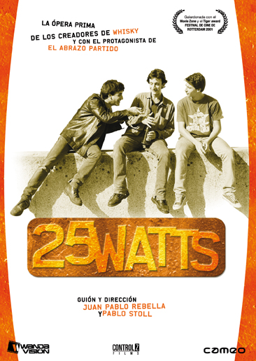
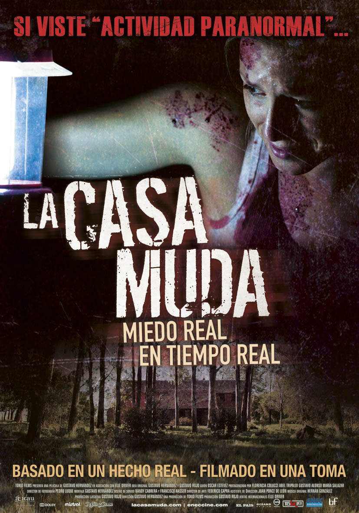
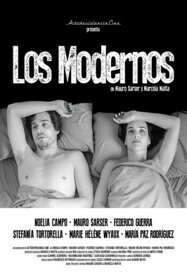
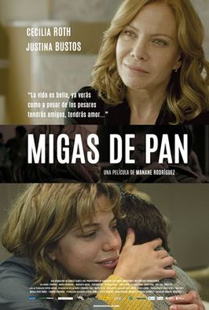

Inicio
Películas
Ayuda
Acerca de ...
Contacto
Todas
Populares
Recientes

25 Watts es una película cómico-dramática uruguaya de 2001, escrita y dirigida por Pablo Stoll y Juan Pablo Rebella, y protagonizada por Daniel Hendler, Jorge Temponi y Alfonso Tort.
La película recibió varios premios, incluyendo mejor película en el Festival Internacional de Cine de Róterdam y mejor opera prima en el Festival de La Habana.

La casa muda es la primera película de terror filmada en una sola toma y la primera de este género grabada enteramente en Uruguay, además de haber sido filmada con una cámara de fotos Canon EOS 5D Mark II. También, luego de pocas semanas en el cartel, la película fue una de las más vistas en Buenos Aires, ciudad en donde se estrenó, con más de 50000 espectadores

Los modernos: un drama sexual es una película uruguaya de 2016. Dirigida por Mauro Sarser y Marcela Matta, es una comedia dramática protagonizada por el mismo Sarser y Noelia Campo sobre seis treintañeros que deben elegir entre ser padres, realizarse como profesionales y liberarse sexualmente.

Migas de pan es una película uruguayo-española de 2016. Dirigida por Manane Rodríguez, es un drama protagonizado por Cecilia Roth y Justina Bustos.23 Fue seleccionada por Uruguay para competir por el Óscar 2017 a la mejor película de habla no inglesa.4